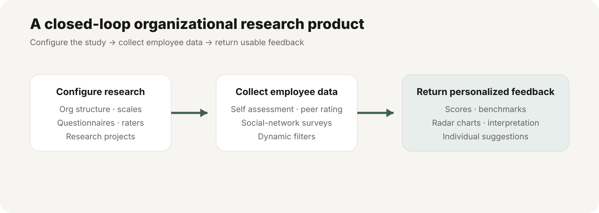
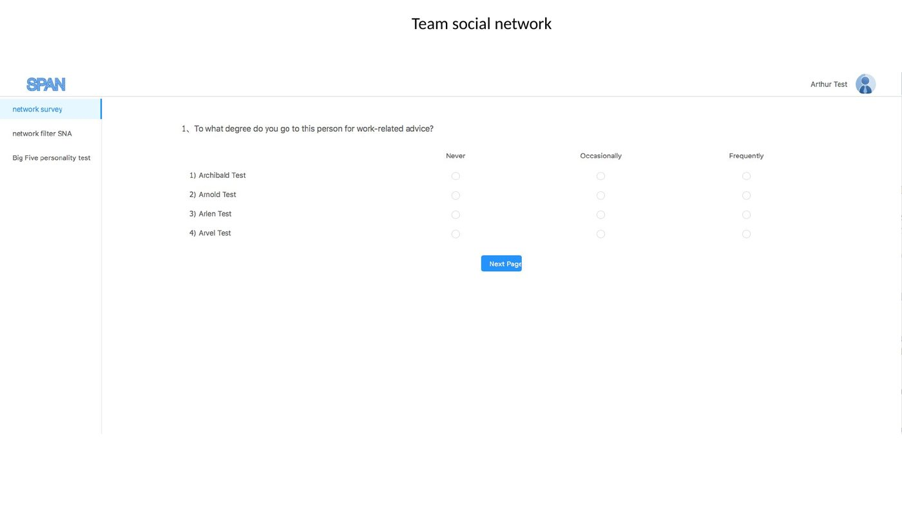
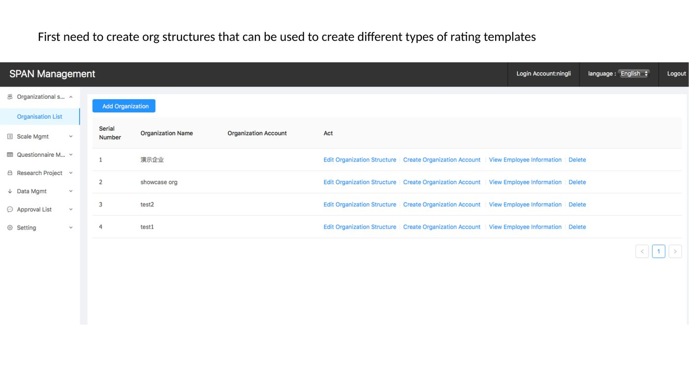
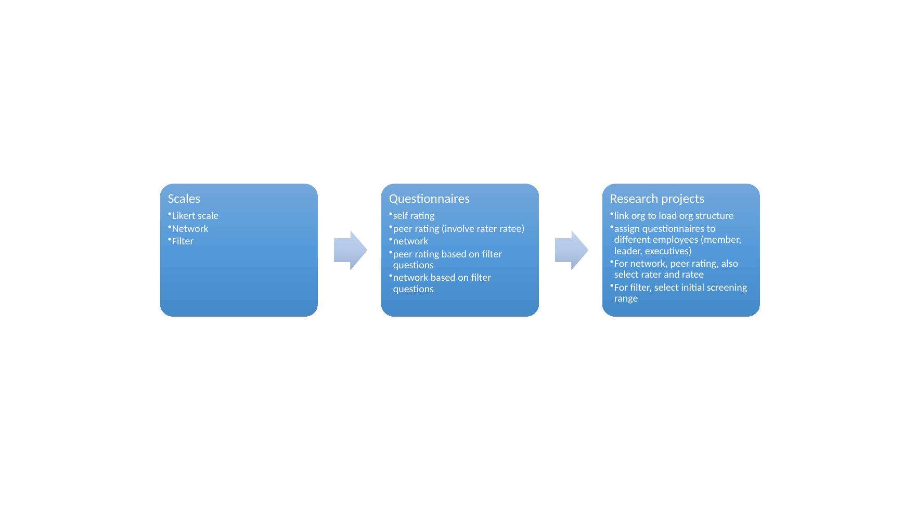
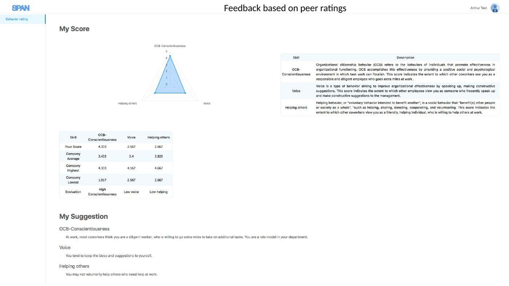

SPAN — From Organizational Research to Personalized Feedback
An early-stage research technology venture with a working web prototype for configuring organizational studies, collecting self-, peer-, and social-network data, and returning personalized employee feedback.
Working Prototype Dashboard — Peer + Self Feedback
SPAN did not stop at survey administration. The working prototype returned employee-facing dashboards that combined multidimensional scores, organizational benchmarks, construct explanations, and individualized suggestions.

What the feedback experience included
Visual profile
Radar charts summarized multiple dimensions in one view.
Benchmarking
Individual results could be viewed alongside organizational average, highest, and lowest values.
Interpretation
Scores were paired with construct descriptions, evaluations, and personalized suggestions.
The system worked as a closed loop

Participant-facing measurement
- Self-assessment surveys
- Peer-rating workflows
- Team social-network surveys
- Filtered network questions based on prior selections
Researcher-facing configuration
- Build organizational hierarchy
- Create Likert, network, and filter scales
- Build questionnaires and research projects
- Assign respondents, raters, and ratees
Original working-prototype screens

Social-network measurement
Relationship data could be collected directly rather than inferred only from individual survey items.

Organizational structure
Researchers could represent hierarchy before configuring study assignment logic.

Reusable research workflow
Scales were assembled into questionnaires and then linked to organizational research projects.

Feedback, not just data export
The same research infrastructure returned interpretable employee-facing feedback.
My role
- Co-founded SPAN and helped shape the science-to-practice model.
- Helped translate organizational-science constructs into configurable research workflows.
- Worked on self-assessment, peer-rating, network, hierarchy, and feedback concepts.
- Helped define both researcher and participant experiences.
How I describe it
The system demonstration documents a genuine working prototype. I would not claim large-scale commercial deployment, but it is fair to describe SPAN as a functioning research technology platform rather than only a concept.